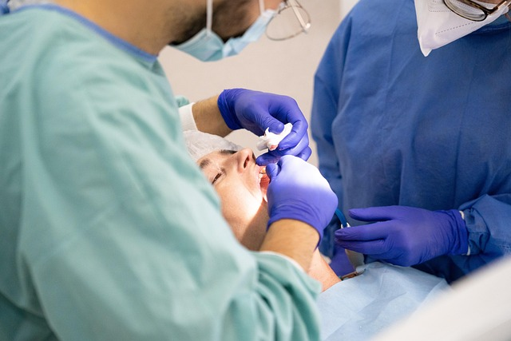

GUIA DE AVALIAÇÃO QUEDA CAPILAR
Falhas arredondadas no couro cabeludo: investigue antes de injeções
Uma ou mais áreas bem delimitadas sem cabelo podem ter causas diferentes do afinamento gradual. Primeiro é importante entender o padrão e a causa; depois, discutir opções adequadas ao diagnóstico.

Uma placa localizada é uma pista, não um diagnóstico
Alopecia areata é uma condição que pode causar uma ou mais áreas arredondadas de perda de cabelo, mas outras condições também podem produzir falhas localizadas. Observar uma placa numa foto ou em casa não confirma a causa. A avaliação pode incluir exame do couro cabeludo e dos fios, perguntas sobre histórico pessoal e familiar e, conforme o caso, dermatoscopia, exames laboratoriais selecionados ou biópsia.
A American Academy of Dermatology orienta que dermatologistas avaliem áreas de perda, couro cabeludo, unhas e histórico de saúde para investigar alopecia areata. A necessidade de cada exame depende dos achados; isso não significa que toda pessoa precise de biópsia ou painel laboratorial.
Por que o padrão muda a conversa sobre mesoterapia
As revisões publicadas sobre mesoterapia para queda capilar estudam principalmente perda de padrão, incluindo alopecia androgenética, e descrevem substâncias, protocolos e resultados heterogêneos. Uma revisão sistemática recente concluiu que faltam esquemas padronizados e estudos controlados maiores. Esses dados não demonstram que mesoterapia trate alopecia areata nem autorizam transferir resultados entre diagnósticos ou produtos.
O serviço local não identifica nesta página um diagnóstico-alvo, substância injetada ou indicação para queda em placas. MMP também é uma técnica de aplicação, não um diagnóstico. A causa precisa ser esclarecida por profissional habilitado antes de avaliar se qualquer procedimento estético tem lugar no plano.
O que levar à avaliação
- Quando percebeu a primeira falha, se surgiu de repente e como a área mudou.
- Fotografias datadas, se já tiver, sem substituir o exame presencial.
- Histórico de queda semelhante, condições de saúde, medicamentos e tratamentos já tentados.
- Informação sobre falhas em sobrancelhas, barba ou outras regiões e mudanças nas unhas.
- Coceira, descamação, dor, vermelhidão, feridas ou secreção no couro cabeludo.
Não comece injeções nem interrompa medicamentos prescritos para tentar conter a queda sem avaliação. Procure avaliação médica com prioridade se a perda estiver se espalhando rapidamente, houver dor, inflamação, secreção ou pele com aspecto de cicatriz.
Perguntas para fazer antes de qualquer procedimento
- Qual diagnóstico ou hipótese explica este padrão e quem deve confirmá-lo?
- Que evidência existe para a substância e via propostas neste diagnóstico específico?
- O produto, sua regularização e a indicação contemplam esse uso?
- Quais alternativas médicas ou a opção de não fazer um procedimento devem ser consideradas?
- Como será acompanhado o diagnóstico e o desfecho sem prometer crescimento capilar?
Injeções usadas por dermatologistas para algumas condições, como corticosteroides intralesionais em alopecia areata selecionada, são tratamentos médicos com indicação própria. Isso não as torna equivalentes à mesoterapia cosmética nem confirma que sejam apropriadas para você.
Referências e limites
- American Academy of Dermatology: diagnóstico e tratamento da alopecia areata — informações ao público sobre avaliação dermatológica e opções médicas; não é uma recomendação individual.
- Gupta et al., revisão sistemática de mesoterapia para queda capilar (2023) — 27 artigos, diferentes agentes e falta de regimes padronizados; não estabelece eficácia para alopecia areata ou para produto local.
- Rinaldi et al., revisão sistemática de mesoterapia em perda capilar de padrão (2022) — evidência voltada sobretudo a perda de padrão, com limitações de amostra e comparação.
Modalidade, substância, indicação local, escopo profissional e fluxo de encaminhamento devem ser confirmados pela profissional. O conteúdo não diagnostica nem substitui consulta dermatológica.